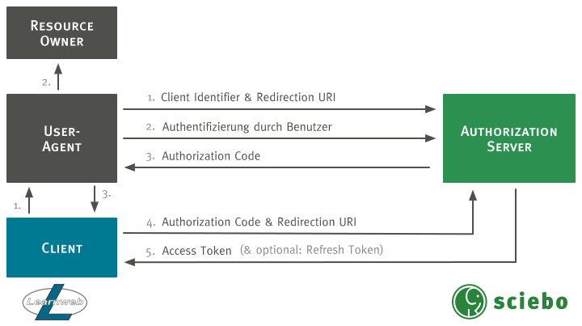

Benutzung
Installation
Hinweis: Zur Zeit liegen die Anpassungen der
davApp als Pull Request vor. Falls die Änderungen angenommen werden, sind sie in einer der nächsten ownCloud Versionen enthalten.
Da die Änderungen zum aktuellen Zeitpunkt noch nicht in den Core aufgenommen wurden, muss der dav-oauth-Branch des geforkten Repositorys geklont werden:
$ git clone -b dav-oauth https://github.com/pssl16/core
Danach müssen die Dependencies installiert werden. Dazu genügt es, im Verzeichnis des Repositorys folgenden Befehl auszuführen:
$ make
Die restlichen Installationsschritte unterscheiden sich nicht von denen im ownCloud Handbuch.
Clientregistrierung
Zur Clientregistrierung muss in der Eingabemaske der OAuth 2 App in den Adminsettings dem Client ein Name gegeben werden und eine gültige URL als redirect URI angegeben werden. Mit Betätigung des OK-Buttons wird der Client registriert, erhält eine ClientID und ein Clientsecret zugewiesen und wird nun in der Tabelle mit den entsprechenden Attributen dargestellt.
Löschen der Clientregistrierung Um eine Clientregistrierung zu löschen muss in den Adminsettings die tabellarische Ansicht der registrierten Clients ausgewählt werden. Nun kann man bei dem zu löschenden Client rechts neben den zugeordneten Attributen auf ein Mülleimer-Symbol klicken, um die entsprechende Clientregistrierung zu löschen.
Authorization Code Flow
Die nachfolgende Abbildung stellt den durch die oauth2 App implementierten OAuth 2.0 Authorization Code Flow dar.

Angepasste WebDAV Schnittstelle
Widerrufung der Autorisierung
Zur Widerrufung der Autorisierung muss diese in den Einstellungen per Klick auf den entsprechenden Button widerrufen werden. Dies ist für den Nutzer in den persönlichen Einstellungen möglich, durch Klicken des Mülleimer-Symbols rechts neben dem jeweiligen Eintrag.